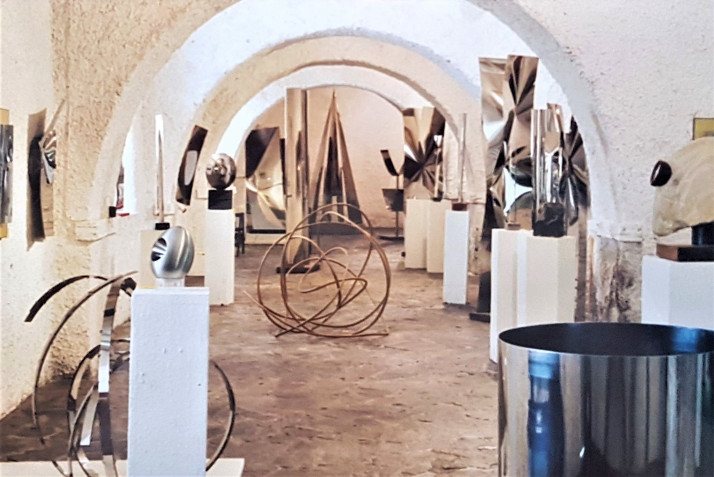
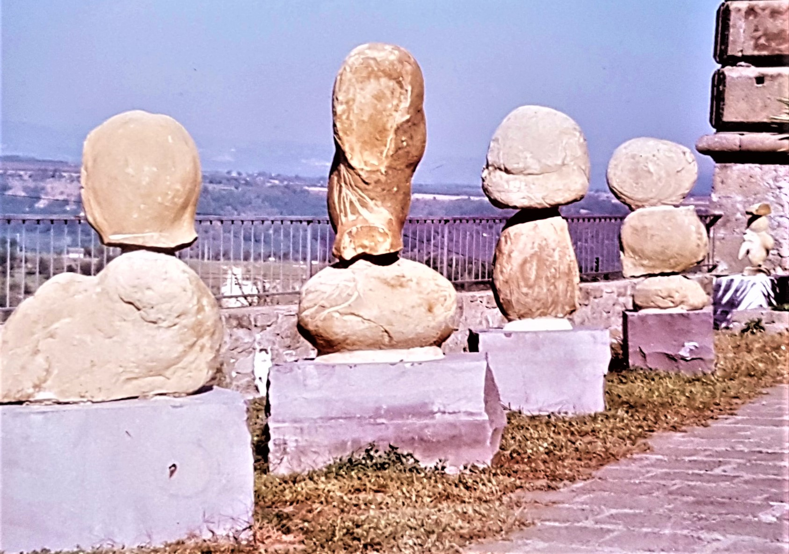
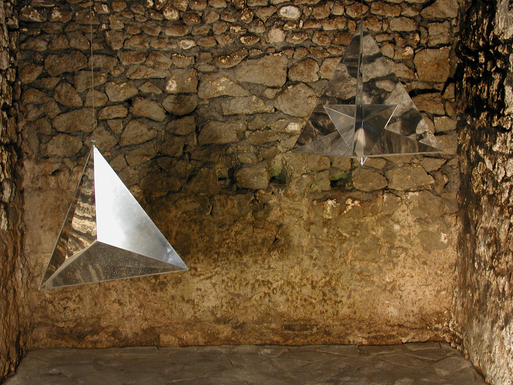
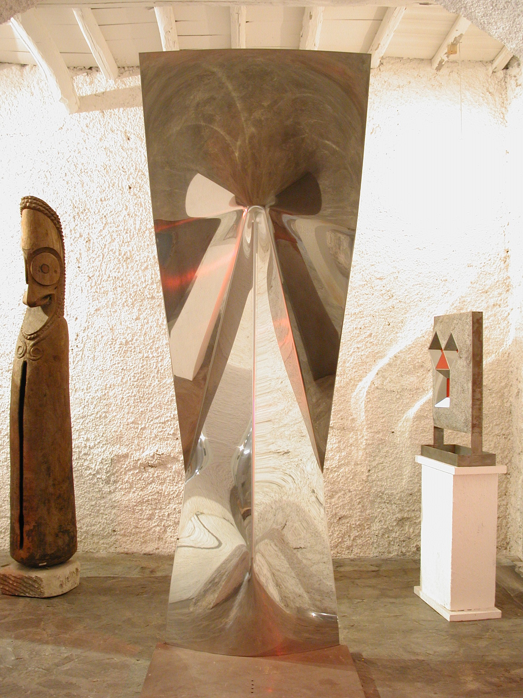
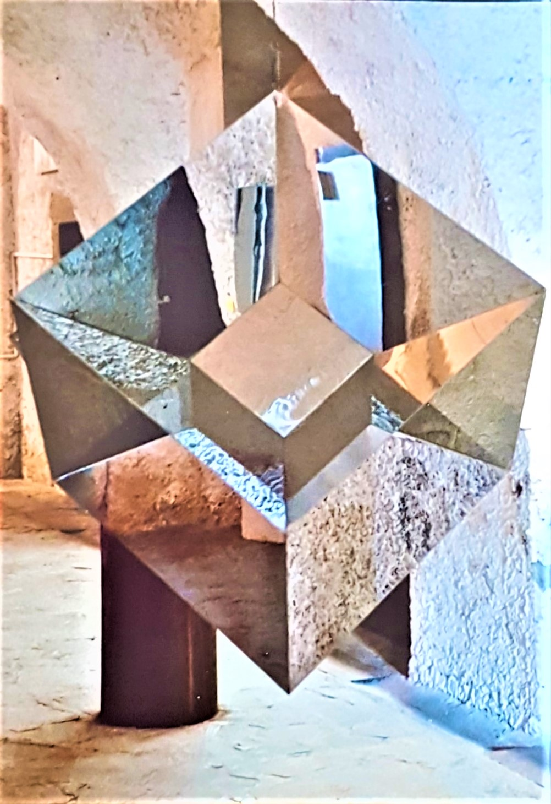
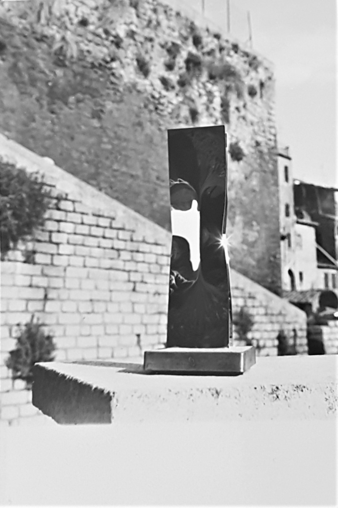
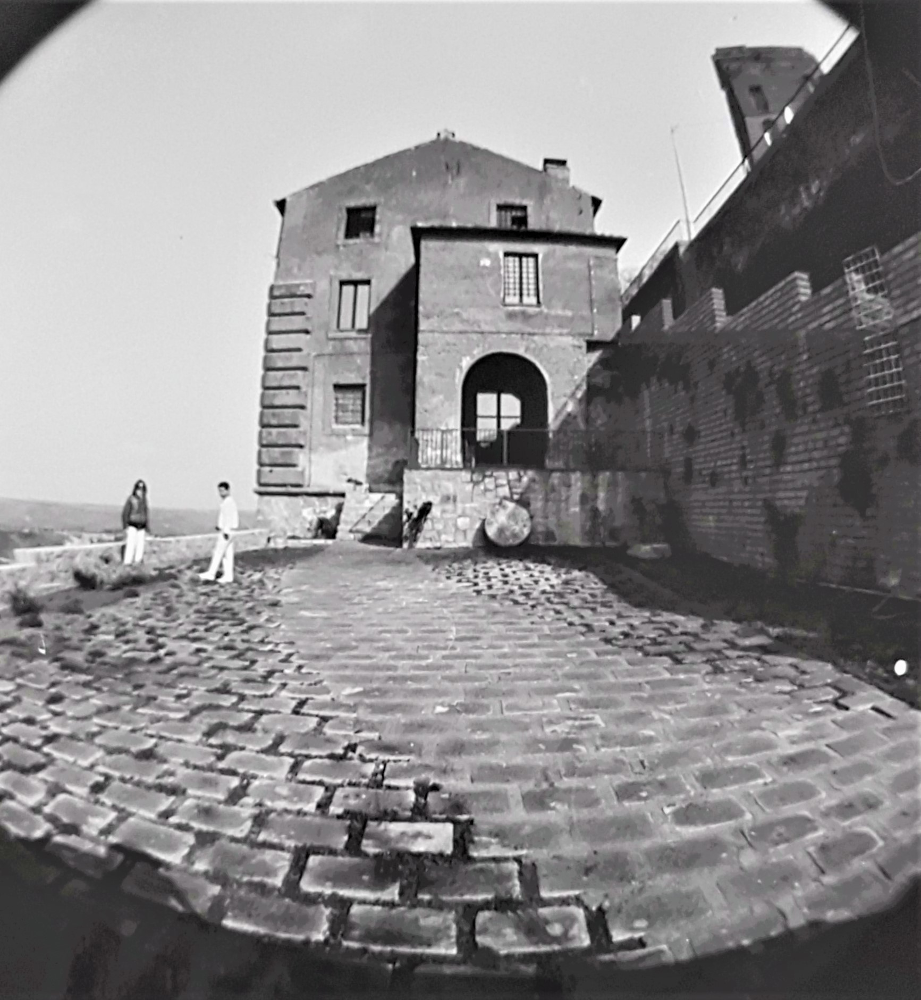
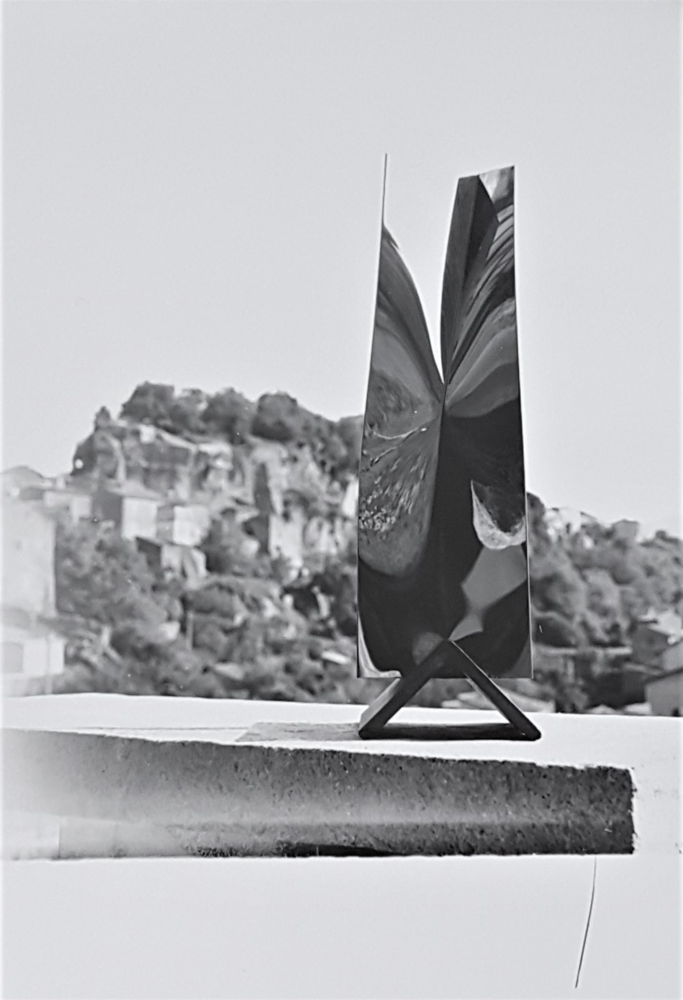

In primo piano la scultura di Attilio Pierelli Monumento Inox (1971), in secondo piano la facciata del Museo di Sculture Iperspaziali di Bomarzo.
Il Museo di Sculture Iperspaziali di Bomarzo (VT) di Attilio Pierelli nacque nel 1991 per volontà dell’artista stesso, il quale sentì la necessità di raccogliere ed esporre, attraverso un percorso cronologicamente “evolutivo”, tutte le sue opere più significative. Per soddisfare tale necessità, l’artista acquistò e ristrutturò il piano terra di un antico palazzo cinquecentesco. L'edificio, luogo un tempo adibito a laboratorio artigianale di ceramica e, successivamente, utilizzato per l'imbottamento e per la stagionatura del tabacco coltivato nella sottostante valle del Tevere, raccoglieva gran parte delle sue opere (circa 120 sculture) ed era costituito da un unico ampio spazio di 400m2 e da un giardino che ospitava altre sculture di grandi dimensioni.

Interno del Museo di Sculture Iperspaziali di Bomarzo

Le sculture in pietra realizzare da Attilio Pierelli esposte all’entrata del Museo di Sculture Iperspaziali di Bomarzo

Le sculture Pentacella e Sidicicella all'interno del Museo di Sculture Iperspaziali di Bomarzo

Al centro, in primo piano, un esemplare della scultura Colloquio

L’Ipercubo di Attilio Pierelli esposto all’interno del Museo di Sculture Iperspaziali di Bomarzo
Completato da un archivio bibliografico, ricco di pubblicazioni e documenti inediti, il museo (del quale Pierelli curò sia l’allestimento che la progettazione) divenne così una sorta di mappa conoscitiva dell’attività artistica dello scultore, la cui storicità aveva lo scopo di sottolineare una continuità di ricerca non più individuale, bensì collettiva, universale. Le sculture, esposte secondo un criterio di coerenza temporale, seguivano l’itinerario estetico/scientifico di Pierelli: dalle prime realizzazioni in vetro alle opere sonore, dalle figure geometriche appartenenti alla quarta dimensione fino ad arrivare ai Nodi. Tale disposizione permetteva di scoprire tutti gli sviluppi e le fasi di una ricerca che, analogamente al procedimento della scultura iperspaziale, utilizzante ripetizioni geometriche infinite e superfici speculari sensibili alla deformazione luminosa a suggerire i possibili sviluppi dei volumi nel tempo e, soprattutto, nello spazio.

Un esemplare della scultura di Attilio Pierelli Monumento Inox sul muretto d’entrata del Museo di Sculture Iperspaziali di Bomarzo

Facciata del Museo di Sculture Iperspaziali di Bomarzo

Un esemplare della scultura di Attilio Pierelli Icaro sul muretto d’entrata del Museo di Sculture Iperspaziali di Bomarzo
Più che un semplice “contenitore” di oggetti d’arte, il Museo di Sculture Iperspaziali venne inaugurato nel 1993 come Museo Laboratorio delle Arti Contemporanee dell’Università della Tuscia di Viterbo e venne concepito esso stesso come una vera e propria opera: un luogo multidisciplinare, di condivisione delle conoscenze e costruttore di punti di riferimento, dove l’azione culturale veniva praticata attraverso una formazione continua che vedeva interagire l’arte, l’Università e la città ospitante.
Nell’ottobre del 2014 il museo verrà chiuso, e parte della collezione donata ed esposta permanentemente all’interno degli spazi di Villa Magherini Graziani di Celalba a San Giustino (PG): la sua inaugurazione è avvenuta nel febbraio del 2016.
documentario "Iperspazio" a cura di Giulo Colavolpe Severi